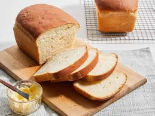
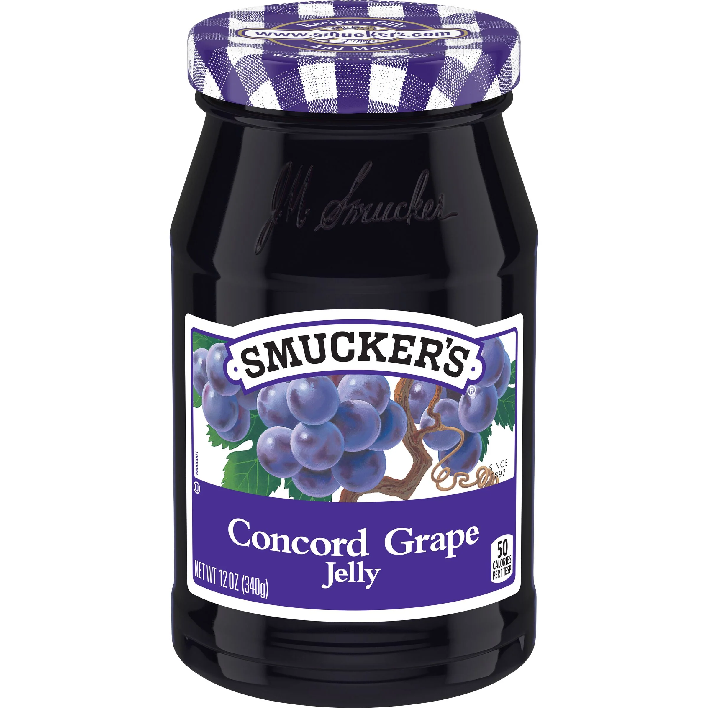
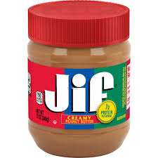

My favorite dish: Peanut Butter and Jelly Sandwich
A peanut butter and jelly (PB&J) sandwich is a beloved classic that combines the savory richness of peanut butter with the sweet tang of jelly, all nestled between two slices of bread. The sandwich begins with a base of soft, pillowy bread—often white or whole wheat—that serves as a blank canvas. Smooth or crunchy peanut butter is spread on one slice, providing a nutty flavor and creamy texture that contrasts beautifully with the jelly's sweetness. The jelly, typically made from fruits like grape or strawberry, is spread on the other slice, adding a burst of fruitiness and a glossy texture. When the two halves come together, they create a delightful mix of flavors and textures that’s not only a treat to the taste buds but also a convenient, quick meal. This sandwich is a staple in many households for its simplicity and the comfort it brings, embodying a nostalgic piece of many childhoods.
| Ingredient | Percentage of Serving | Picture |
|---|---|---|
| Bread | 2 slices |  |
| Jelly | Approx. 2 tablespoons |  |
| Peanut Butter | Approx. 2 tablespoons |  |